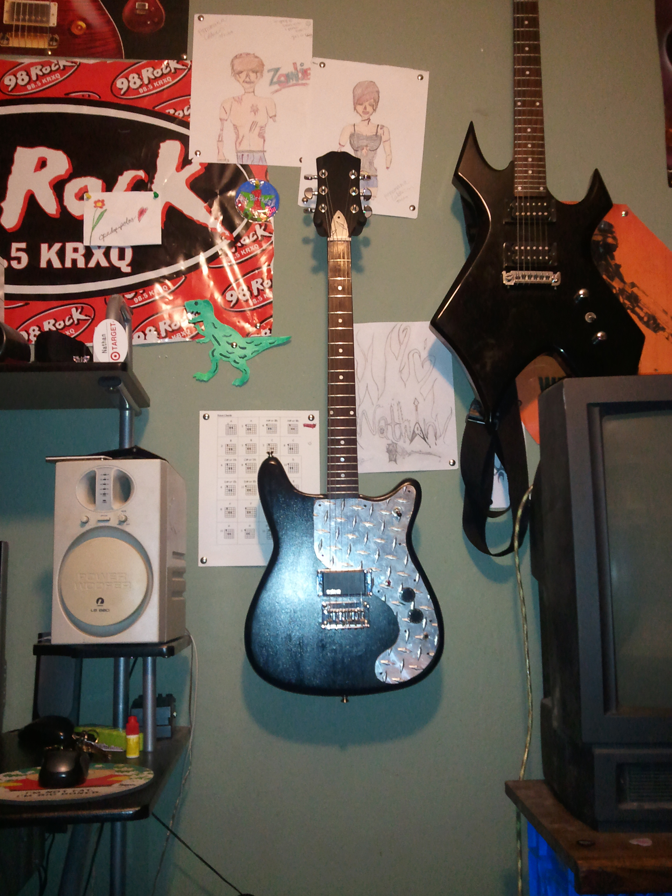

SENIOR PROJECT
Home
For my senior project I refurbished a 1970's Epiphone Crestwood Electric Guitar.

I spent more than 150 hours on my senior project over the course of two years, refurbishing a 1970s Epiphone Crestwood electric guitar. The project came with plenty of frustrating problems, but I kept adapting, changing plans when needed, and pushing it forward until I had something I was genuinely proud to present.
One of the biggest challenges was the electronics. I ended up custom wiring the inside of the guitar myself, including a fully functioning kill switch.
(The senior project presentation files have since been lost.)